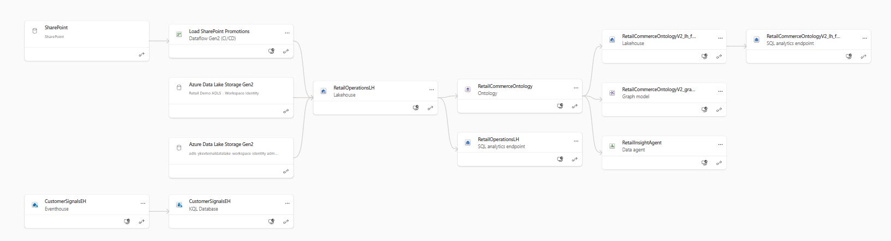
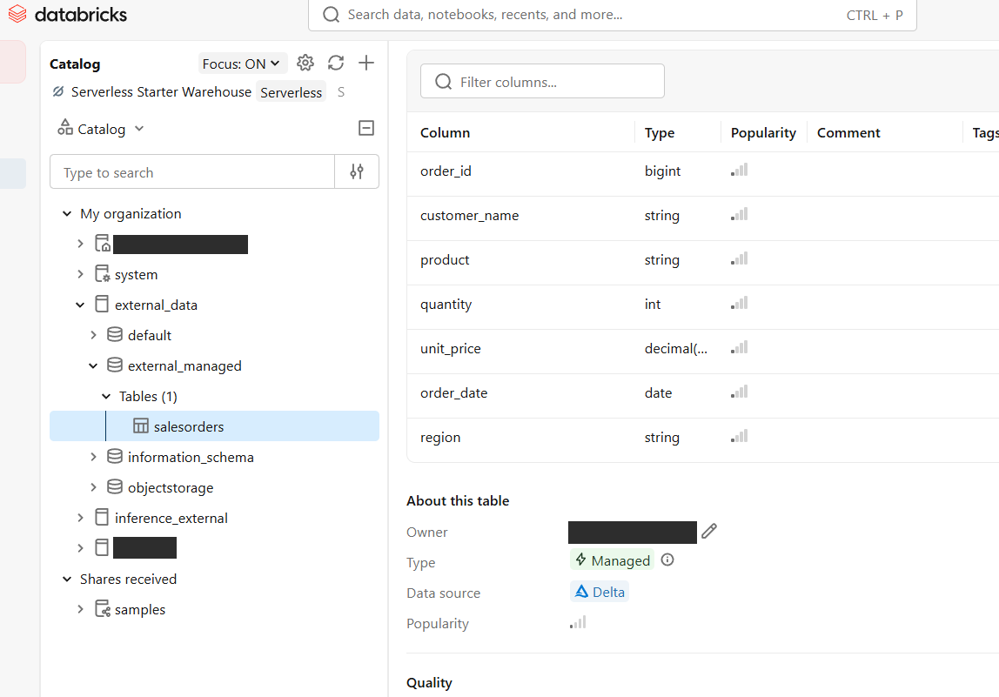
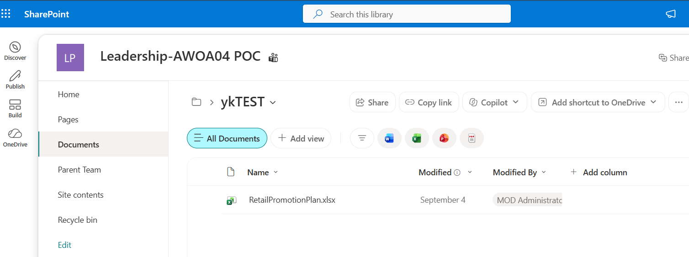
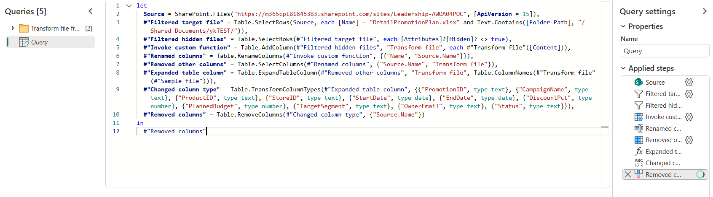

Retail Ontology Agent 데모 — 가이드 & 설명
한 줄 요약 — "잘 기획된 프로모션(PR9999, Seoul Audio Summer Surge)이 강한 구매 의도를 만들었지만, 재고 부족으로 전환에 실패했다"는 인사이트를, 온톨로지가 연결한 여러 소스를 Data Agent가 관계로 추적해 근거와 함께 도출합니다.
1. 데모가 보여주는 것
- 비즈니스 질문: 서울 오디오 여름 프로모션은 왜 고객 관심이 폭발했는데 매출은 저조했나?
- 핵심 메시지: 온톨로지는 테이블·컬럼을 비즈니스 의미(엔터티·관계)로 바꾸고, Data Agent는 이름 매칭이 아니라 관계 그래프를 순회해 답을 만든다.
- 결정적 신호: 장바구니 담기 1,729건 vs 실제 구매 36건 → 전환율 2.08%. 같은 기간 해당 매장·상품의 평균 재고는 1개였다.
- 액션: 재고 확보 전까지 캠페인 예산 재배분 + 개인화 동의를 가진 고가치 고객만 합법적으로 재접촉.
2. 아키텍처 — 4개 물리 계층 → 1개 온톨로지
이 데모의 핵심은 네 가지 서로 다른 물리 저장 방식이 하나의 온톨로지로 통합된다는 점입니다.
이벤트 데이터 이중 적재 — 같은 데이터셋을 JSONL은 CustomerSignalsEH(Eventhouse/KQL)로, Delta는 customer_events(Lakehouse)로 각각 한 번씩 적재합니다. 온톨로지 정적 바인딩은 OneLake 기반 소스가 필요해 Lakehouse 사본을 사용합니다.
| 소스 | 데이터셋 | Fabric 표현 | 패턴 |
|---|---|---|---|
| Lakehouse | products, stores, orders, order_lines, inventory_snapshots, customer_events | 관리형 Delta 테이블 | 운영·트랜잭션 데이터 |
| ADLS / Databricks | customer_profiles | OneLake 테이블 단축(shortcut) | 복사 없는 접근 — 외부 Databricks Delta 테이블 |
| SharePoint | RetailPromotionPlan.xlsx | Dataflow Gen2 → promotions 테이블 | 업무 담당자가 관리하는 캠페인 계획 |
| Eventhouse | CustomerEvents | KQL 테이블 (실시간 분석용 보존) | 행동 신호 30,000행 |
설계 메모 —
customer_events는 같은 생성 데이터셋을 Eventhouse(JSONL)와 Lakehouse(Delta)에 각각 한 번씩 적재한 정적 사본입니다. 둘 사이에 Eventstream이나 연속 동기화는 없습니다. 온톨로지 데이터 바인딩은 정적(비시계열) 매핑에 OneLake 기반 소스(Lakehouse/Warehouse)를 요구하므로,CustomerEvent엔터티는 Lakehouse 테이블에 바인딩됩니다. Eventhouse는 추가 시계열 바인딩에만 사용할 수 있습니다.
3. Fabric 자산 (현재 워크스페이스)
라이브 워크스페이스: Retail Ontology Agent Demo (접근에는 권한 필요)
| 자산 | 이름 | ID |
|---|---|---|
| Workspace | Retail Ontology Agent Demo | 8653f3c5-…-13f7c26b9d93 |
| Capacity | ykfabricf64 (F16, Korea Central) | e6f53d36-…-5cd17a4843c4 |
| Lakehouse | RetailOperationsLH | 6afeb90e-…-2c088deb31a6 |
| SQL 엔드포인트 | RetailOperationsLH | 0c56c7b9-…-860fcc3d3b48 |
| Eventhouse | CustomerSignalsEH | cbda2912-…-9fe5314512e2 |
| KQL Database | CustomerSignalsEH | 8b674898-…-092d1271da55 |
| Ontology | RetailCommerceOntology | f7eecc18-…-90f5bb3deb21 |
| Data Agent | RetailInsightAgent | 990a6399-…-bcac81084ccb |
첫 번째로 공유된 링크(…/Queries/MyQueries/…SQL query 1)는 이 Lakehouse의 SQL 분석 엔드포인트에서 실행하는 탐색용 T-SQL 쿼리입니다. 온톨로지가 어떤 물리 테이블을 바인딩하는지 SQL로 직접 확인할 때 사용합니다.
3.1 리니지 (데이터 계보)
Fabric 리니지 뷰로 본 전체 계보입니다. 여러 소스가 RetailOperationsLH로 모이고, 그 위에 온톨로지와 Data Agent가 얹힙니다.

| 리니지 노드 | 실제 자산 / 테이블 |
|---|---|
| SharePoint → Load SharePoint Promotions (Dataflow Gen2) | RetailPromotionPlan.xlsx → promotions 테이블 |
| Azure Data Lake Storage Gen2 · Retail Demo ADLS (Workspace Identity) | customer_profiles OneLake 단축 |
| Azure Data Lake Storage Gen2 · ykexternaldatalake | 외부 Databricks Delta (customer_profiles 원천) |
| CustomerSignalsEH (Eventhouse → KQL Database) | CustomerEvents KQL 테이블 |
| RetailOperationsLH (Lakehouse / SQL analytics endpoint) | 8개 Delta 테이블 |
| RetailCommerceOntology (Ontology) | 7 엔터티 · 12 관계 |
| RetailInsightAgent (Data agent) | 자연어 질의 에이전트 |
4. 데이터 소스 4계층 상세
4.1 관리형 Delta (운영 데이터)
RetailOperationsLH는 8개 Delta 테이블로 구성되며, customer_profiles 하나만 단축이고 나머지 7개는 OneLake 관리형 테이블입니다.
| 테이블 | 행 수 | 비고 |
|---|---|---|
| products | 50 | 마스터 |
| stores | 6 | 마스터 |
| orders | 6,000 | 운영 |
| order_lines | 6,000 | 운영 |
| inventory_snapshots | 37,200 | 운영(재고 스냅샷) |
| customer_events | 30,000 | 이벤트(온톨로지 바인딩용 Lakehouse 사본) |
| promotions | 17 | SharePoint Excel → Dataflow |
| customer_profiles | 500 | ADLS 단축 |
4.2 ADLS 단축 (복사 없는 외부 접근)
- ADLS 경로:
abfss://raw@ykexternaldatalake.dfs.core.windows.net/retail-ontology-demo/customer_profiles - OneLake 단축:
RetailOperationsLH/Tables/customer_profiles - 연결:
Retail Demo ADLS - Workspace Identity(스토리지 계정 범위에Storage Blob Data Reader부여) - Databricks 카탈로그 페더레이션과 동일한 "복사 없는 접근" 패턴 — 데이터는 Fabric에 복제되지 않고 외부 ADLS에 그대로 남습니다.
customer_profiles는 외부 Databricks(Unity Catalog)의 관리형 Delta 테이블에서 비롯되며, ADLS Gen2를 거쳐 OneLake 단축으로 Fabric에 연결됩니다. 아래는 외부 Databricks Unity Catalog에서 관리되는 Delta 테이블의 예시입니다(Type: Managed, Data source: Delta).

4.3 SharePoint Excel → Dataflow (담당자 관리 데이터)
| 설정 | 값 |
|---|---|
| 사이트 | …/sites/Leadership-AWOA04POC |
| 라이브러리 / 폴더 | Shared Documents / ykTEST |
| 원본 파일 / 테이블 | RetailPromotionPlan.xlsx / PromotionPlan |
| 대상 테이블 | RetailOperationsLH/Tables/promotions |
Dataflow Gen2가 17개 고유 프로모션을 적재하고 Promotion 엔터티 바인딩을 활성화했습니다. ⚠️ SharePoint Folder 커넥터는 사이트 URL만 사용하고, /Forms/AllItems.aspx로 끝나는 라이브러리 뷰 URL은 넣지 않습니다.

Leadership-AWOA04 POC 사이트 → Shared Documents/ykTEST → RetailPromotionPlan.xlsx
SharePoint.Files로 원본을 읽어 RetailPromotionPlan.xlsx를 필터링하고 컬럼 타입을 지정해 promotions 테이블로 적재4.4 Eventhouse (행동 신호)
CustomerSignalsEH의 CustomerEvents KQL 테이블에 30,000행을 보존합니다. 실시간/시계열 분석용이며, 온톨로지 엔터티 식별·속성은 Lakehouse 사본이 담당합니다(§2 설계 메모).
5. 온톨로지 모델 — 7 엔터티 · 12 관계
5.1 엔터티
| 엔터티 | 식별자 | 소스 바인딩 | 주요 속성 |
|---|---|---|---|
| Customer | CustomerID | ADLS 단축: customer_profiles | Segment, HomeRegion, LoyaltyTier, LifetimeValue, ConsentForPersonalization |
| Product | ProductID | Lakehouse: products | ProductName, Category, Brand, ListPrice, UnitCost |
| Store | StoreID | Lakehouse: stores | StoreName, Region, StoreFormat |
| Order | OrderID | Lakehouse: orders | OrderTimestampUtc, Channel, OrderStatus, OrderTotal |
| Promotion | PromotionID | SharePoint→Lakehouse: promotions | CampaignName, 기간, DiscountPct, PlannedBudget, TargetSegment, Status |
| InventorySnapshot | SnapshotID | Lakehouse: inventory_snapshots | SnapshotDate, OnHandQuantity, ReorderPoint, InboundQuantity |
| CustomerEvent | EventID | Lakehouse: customer_events | EventTimestampUtc, EventType, SessionID, Channel, DeviceType |
5.2 관계
| 관계 | 소스 → 대상 | 컨텍스트 키 |
|---|---|---|
| placed | Customer → Order | orders.CustomerID |
| fulfilledAt | Order → Store | orders.StoreID |
| contains | Order → Product | order_lines.OrderID + ProductID |
| appliedPromotion | Order → Promotion | order_lines.PromotionID |
| promotes | Promotion → Product | promotions.ProductID |
| runsAt | Promotion → Store | promotions.StoreID |
| hasInventory | Store → InventorySnapshot | inventory_snapshots.StoreID |
| inventoryFor | InventorySnapshot → Product | inventory_snapshots.ProductID |
| generated | Customer → CustomerEvent | customer_events.CustomerID |
| interactedWith | CustomerEvent → Product | customer_events.ProductID |
| attributedTo | CustomerEvent → Promotion | customer_events.PromotionID |
| occurredAt | CustomerEvent → Store | customer_events.StoreID |
5.3 온톨로지 그래프5.3 Ontology graph
온톨로지 정의에서 추출한 전체 그래프입니다 — 7개 엔터티(노드)와 12개 관계(방향 간선). 화살표는 관계의 방향을, 라벨은 관계 이름을 나타냅니다.The full graph extracted from the ontology definition — 7 entities (nodes) and 12 relationships (directed edges). Arrows show relationship direction; labels are the relationship names.
6. Data Agent — RetailInsightAgent
6.1 그라운딩 지침(핵심)
에이전트는 7개 엔터티를 모두 선택하고, 다음과 같은 근거 기반 분석 지침으로 온톨로지 관계를 순회합니다.
- 이름 매칭이 아니라 온톨로지 관계를 순회해서 답한다.
- 행동=CustomerEvent, 재고=InventorySnapshot, 매출=Order, 캠페인=Promotion으로 매핑.
- 한 쿼리로 3개 이상 엔터티를 스팬하지 않는다. "X가 없다"를 NOT EXISTS/anti-join으로 표현하지 않는다 → 이 온톨로지에서는 0행 반환.
- 대신 분해(decompose): 엔터티별 단순 쿼리로 ID 목록을 얻고, 교집합·차집합을 직접 계산한다.
- 가장 선택적인(작은) 엔터티부터 시작해 ID 목록을 큰 엔터티로 가져간다(결과 잘림 방지).
- count가 0보다 큰지 확인하기 전에 나눗셈하지 않는다.
용어 정의도 지침에 고정되어 있습니다 — 구매 의도=AddToCart, 전환=Purchase, 고가치 고객=Segment 'High Value', 접촉 가능=ConsentForPersonalization true, 재고 위험=OnHandQuantity ≤ ReorderPoint 등.
6.2 쿼리 방법 (Assistants 스타일 API)
?api-version=2024-05-01-preview + https://api.fabric.microsoft.com 베어러 토큰이 필요합니다.
BASE = https://api.fabric.microsoft.com/v1/workspaces/{workspaceId}/dataAgents/{agentId}/aiassistant/openai
POST {BASE}/assistants -> assistant_id
POST {BASE}/threads -> thread_id
POST {BASE}/threads/{id}/messages {"role":"user","content":"<질문>"}
POST {BASE}/threads/{id}/runs {"assistant_id":""}
GET {BASE}/threads/{id}/runs/{run_id} 상태가 종료될 때까지 폴링
GET {BASE}/threads/{id}/messages -> 답변
DELETE {BASE}/threads/{id} ❗ 동작하지 않는 엔드포인트: /chat/completions(404), MCP 툴 호출(타임아웃), 2026-08-26 폐기된 OpenAI Assistants API 기반 샘플.
7. 데모 시나리오 (검증된 12개 질문)
Part 1 — 모델은 실제다
How many stores are there? → 6 · How many products are there? → 50 · How many orders are there? → 6,000
Part 2 — 하나의 비즈니스 객체, 여러 소스
Show the campaign name, store, and product for promotion PR9999.→ Seoul Audio Summer Surge / S001 Seoul Flagship / P0001 Audio Series 01Which store is promotion PR9999 running at?→ S001, Seoul FlagshipWhich product does promotion PR9999 promote?→ P0001, Audio Series 01 (Audio/Contoso, 정가 132.02, 원가 82.70)
Part 3 — 인사이트 (핵심)
How many AddToCart and Purchase customer events are attributed to promotion PR9999?→ 1,729 vs 36 (전환율 2.08%)How many CustomerEvent records have ProductID P0001?→ 3,586
내러티브: 캠페인은 잘 기획됐고 고객은 명확히 상품을 원했지만 거의 아무도 살 수 없었다. 캠페인 기간(2026-08-03~08-16) S001의 P0001 평균 재고는 1개였고, 그 구간 14개 스냅샷 모두 재주문점 이하였다.
Part 4 — 액션
How many Customer records have Segment High Value and ConsentForPersonalization true?→ 33Which high-value customers showed purchase intent for P0001 but did not purchase, and may be contacted under their personalization consent?→ 33명 중 약 32명 (C000006, C000021, C000037, …). 에이전트가 질문을 분해해 고가치·동의 고객을 먼저 좁힌 뒤 이벤트를 확인.
8. MCP로 외부 노출
외부 노출은 두 개의 MCP 엔드포인트로 가능합니다. 둘 다 Fabric이 기본 제공하므로 별도 서버를 만들 필요가 없습니다. 아래는 이 워크스페이스에서 실제로 호출해 확인한 내용입니다.
8.1 엔드포인트
# Ontology MCP — 온톨로지 직접 노출
POST https://api.fabric.microsoft.com/v1/mcp/workspaces/{workspaceId}/ontologies/{ontologyId}
# Data Agent MCP — 에이전트를 통한 노출
POST https://api.fabric.microsoft.com/v1/mcp/workspaces/{workspaceId}/dataagents/{agentId}/agent이 데모의 실제 값입니다.
| 항목 | ID |
|---|---|
| Workspace | 8653f3c5-60af-4976-9aad-13f7c26b9d93 |
| Ontology | f7eecc18-db38-46f4-8815-90f5bb3deb21 |
| Data Agent | 990a6399-eae2-40ce-aa7b-bcac81084ccb |
온톨로지 경로는 ID 뒤에 아무것도 붙이지 않습니다.
ontology,/mcp,/agent를 붙이면404 EntityNotFound입니다. 반대로 에이전트 경로는/agent가 반드시 필요합니다.
8.2 인증
Entra ID 토큰이며, 익명 접근은 불가능합니다. 호출자는 워크스페이스 권한을 그대로 상속합니다.
TOKEN=$(az account get-access-token \
--resource https://api.fabric.microsoft.com \
--query accessToken -o tsv)프로덕션이라면 서비스 주체를 쓰고, 테넌트 설정에서 "서비스 주체가 Fabric API를 사용할 수 있음"이 켜져 있어야 합니다.
8.3 호출 방법
MCP는 JSON-RPC 2.0이고, Accept 헤더에 text/event-stream이 포함되어야 합니다.
curl -X POST "$URL" \
-H "Authorization: Bearer $TOKEN" \
-H "Content-Type: application/json" \
-H "Accept: application/json, text/event-stream" \
-d '{"jsonrpc":"2.0","id":1,"method":"tools/list","params":{}}'Ontology MCP가 주는 도구 2개
{"jsonrpc":"2.0","id":1,"method":"tools/call","params":{
"name":"list_ontology_entity_types",
"arguments":{"includeProperties":true}}}{"jsonrpc":"2.0","id":2,"method":"tools/call","params":{
"name":"search_ontology",
"arguments":{"naturalLanguageQuery":"...","naturalLanguageResponse":true}}}search_ontology는 structuredContent.raw에 집계된 테이블을 담아 줍니다.
{"Fields": ["promotion_id", "event_type", "event_count"],
"Value": [["PR9999", "AddToCart", 1729], ["PR9999", "Purchase", 36], ...]}Data Agent MCP가 주는 도구 1개
{"jsonrpc":"2.0","id":1,"method":"tools/call","params":{
"name":"DataAgent_RetailInsightAgent",
"arguments":{"userQuestion":"How many stores are there?"}}}도구 이름이 에이전트 표시 이름을 따라갑니다. 에이전트 이름을 바꾸면 도구 이름도 바뀌므로, 클라이언트 설정이 깨질 수 있습니다.
8.4 MCP 클라이언트 등록
VS Code, Claude Desktop 등 MCP 클라이언트에 HTTP 서버로 등록합니다.
{
"servers": {
"fabric-ontology": {
"type": "http",
"url": "https://api.fabric.microsoft.com/v1/mcp/workspaces/8653f3c5-60af-4976-9aad-13f7c26b9d93/ontologies/f7eecc18-db38-46f4-8815-90f5bb3deb21",
"headers": { "Authorization": "Bearer ${input:fabricToken}" }
}
}
}타임아웃을 늘려야 합니다. 온톨로지 질의가 17초, 에이전트 질의가 31초였고, 유휴 후 첫 호출은 더 걸립니다. 기본 타임아웃이 짧은 클라이언트는 실패합니다.
8.5 사전 조건
| 경로 | 필요한 것 |
|---|---|
| Ontology MCP | 온톨로지를 포털에서 1회 저장 (쿼리 그래프 생성) |
| Data Agent MCP | 에이전트 publish 필요. published 스테이지가 없으면 Stage configuration not found |
8.6 어느 쪽을 쓸 것인가
| Ontology MCP | Data Agent MCP | |
|---|---|---|
| 도구 | 스키마 탐색 + 질의 (2개) | 질의 (1개) |
| 반환 | 구조화 테이블 + 선택적 산문 | 산문만 |
| 속도 | 17초 | 31초 |
| 데이터 범위 | 해당 온톨로지 | 에이전트에 연결된 모든 소스 |
| 분석 지침 | 적용 안 됨 | 적용됨 |
마지막 행이 실질적인 판단 기준입니다. deploy_data_agent.py에 넣어둔 규칙 — "구매 의도는 AddToCart로 판단한다", "전환 판정에 Order를 쓰지 말고 CustomerEvent의 Purchase를 쓴다", "동의한 고객만 접촉 대상이다" — 이런 도메인 가드레일은 에이전트에만 적용됩니다.
- 외부 에이전트가 스스로 추론하고 구조화된 데이터를 원한다 → Ontology MCP
- 분석 규칙을 서버 쪽에서 강제하고 싶다, 혹은 여러 Fabric 소스를 묶는다 → Data Agent MCP
8.7 주의사항
- 둘 다 Preview입니다. 프로덕션 아키텍처 제안 시 명시해야 합니다.
- 응답이 Fabric 규정 준수 경계·리전 밖으로 나갈 수 있습니다. MCP 클라이언트가 어디서 실행되고 데이터를 어떻게 저장하는지는 Fabric이 통제하지 못합니다. 거버넌스 검토 항목입니다.
- Ontology MCP의
resources/list는 비활성화 상태이고, Data Agent MCP도 마찬가지로-32601 Feature is not enabled를 반환합니다. 스키마를 리소스로 내보내는 기능은 아직 없습니다.
9. 알려진 한계 & 문제 해결
- 3개 이상 엔터티를 한 문장에 스팬하면 빈 결과 → Part 3·4처럼 분해해서 질문.
- 큰 식별자 목록은 잘림 → 카운트는 신뢰, 완전한 목록은 비신뢰.
- Instances 탭은 바인딩을 직접 읽어 그래프가 오래돼도 행을 보여줌 → 그래프 건강성은 에이전트 질문으로 확인.
- The Graph Model is not ready → 온톨로지를 포털에서 열고 저장.
- 포털에 안 보이는 에이전트 복구: 아이템을 수리하지 말고 재생성 —
DELETE items/{oldId}→POST items(type:DataAgent) →deploy_data_agent.py로 재배포 → 포털 URL…/aiskills/{agentId}확인.
10. 재현 방법
리포지토리: yk2ndorganization/Ontologytesting
# 1) 결정적 데모 데이터 생성 (Delta/JSONL/Excel)
python3 -m pip install -r requirements.txt
python3 scripts/generate_demo_data.py
# 2) 네이티브 데이터 배포 (Azure CLI 인증 후)
python3 scripts/deploy_onelake.py --workspace-id --lakehouse-id --source data/lakehouse
python3 scripts/deploy_eventhouse.py --cluster --database CustomerSignalsEH --source data/eventhouse/customer_events.jsonl
python3 scripts/deploy_ontology.py --workspace-id --ontology-id --lakehouse-id --eventhouse-id --cluster --database CustomerSignalsEH
python3 scripts/deploy_data_agent.py --workspace-id --agent-id --agent-name RetailInsightAgent --ontology-id --ontology-name RetailCommerceOntology 온톨로지를 REST로 배포한 뒤에는 포털에서 한 번 열어 저장해야 쿼리 그래프가 생성됩니다. SharePoint 적재는 UI(Dataflow Gen2)로 진행합니다(§4.3).
참고
- 리포지토리 문서:
docs/architecture.md·docs/ontology-model.md·docs/demo-script.md·docs/data-agent-operations.md·docs/sharepoint-ingestion.md - 라이브 워크스페이스: Retail Ontology Agent Demo
- 관련 가이드: 03. 온톨로지 심화 · 04. Data Agent
Retail Ontology Agent Demo — Guide & Explainer
In one line — the agent derives, with evidence, the insight that "a well-funded promotion (PR9999, Seoul Audio Summer Surge) created strong purchase intent but failed to convert due to inventory scarcity" by traversing the relationships the ontology draws across multiple sources.
1. What the Demo Shows
- Business question: Why did the Seoul audio summer promotion draw huge customer interest yet produce weak sales?
- Core message: an ontology turns tables/columns into business meaning (entities and relationships), and the Data Agent answers by traversing the relationship graph rather than matching names.
- The decisive signal: 1,729 add-to-cart vs. 36 actual purchases → a 2.08% conversion. Average on-hand inventory for that store/product over the same window was 1 unit.
- The action: reallocate campaign budget until inventory recovers, and legally re-contact only high-value customers who have personalization consent.
2. Architecture — Four Physical Layers → One Ontology
The essence of this demo is that four different physical storage styles converge into a single ontology.
Event data dual-load — the same dataset is loaded once each: JSONL into CustomerSignalsEH (Eventhouse/KQL) and Delta into customer_events (Lakehouse). Ontology static bindings require a OneLake-backed source, so the Lakehouse copy is used.
| Source | Dataset | Fabric representation | Pattern |
|---|---|---|---|
| Lakehouse | products, stores, orders, order_lines, inventory_snapshots, customer_events | Managed Delta tables | Operational / transactional data |
| ADLS / Databricks | customer_profiles | OneLake table shortcut | Copy-free access — external Databricks Delta table |
| SharePoint | RetailPromotionPlan.xlsx | Dataflow Gen2 → promotions table | Business-managed campaign plan |
| Eventhouse | CustomerEvents | KQL table (kept for real-time analysis) | 30,000 behavioral signal rows |
Design note —
customer_eventsis a static copy of the same generated dataset loaded once each into the Eventhouse (JSONL) and the Lakehouse (Delta). There is no Eventstream or continuous sync between them. Since ontology data bindings require a OneLake-backed source (Lakehouse/Warehouse) for static (non-time-series) mappings, theCustomerEvententity is bound to the Lakehouse table. Eventhouse can only be used for additional time-series bindings.
3. Fabric Assets (Current Workspace)
Live workspace: Retail Ontology Agent Demo (access requires permission)
| Asset | Name | ID |
|---|---|---|
| Workspace | Retail Ontology Agent Demo | 8653f3c5-…-13f7c26b9d93 |
| Capacity | ykfabricf64 (F16, Korea Central) | e6f53d36-…-5cd17a4843c4 |
| Lakehouse | RetailOperationsLH | 6afeb90e-…-2c088deb31a6 |
| SQL endpoint | RetailOperationsLH | 0c56c7b9-…-860fcc3d3b48 |
| Eventhouse | CustomerSignalsEH | cbda2912-…-9fe5314512e2 |
| KQL Database | CustomerSignalsEH | 8b674898-…-092d1271da55 |
| Ontology | RetailCommerceOntology | f7eecc18-…-90f5bb3deb21 |
| Data Agent | RetailInsightAgent | 990a6399-…-bcac81084ccb |
The first shared link (…/Queries/MyQueries/…SQL query 1) is an exploratory T-SQL query run against this Lakehouse SQL analytics endpoint — used to verify directly in SQL which physical tables the ontology binds.
3.1 Lineage
The full lineage as seen in the Fabric lineage view. Several sources converge into RetailOperationsLH, with the ontology and Data Agent layered on top.
| Lineage node | Actual asset / table |
|---|---|
| SharePoint → Load SharePoint Promotions (Dataflow Gen2) | RetailPromotionPlan.xlsx → promotions table |
| Azure Data Lake Storage Gen2 · Retail Demo ADLS (Workspace Identity) | customer_profiles OneLake shortcut |
| Azure Data Lake Storage Gen2 · ykexternaldatalake | External Databricks Delta (origin of customer_profiles) |
| CustomerSignalsEH (Eventhouse → KQL Database) | CustomerEvents KQL table |
| RetailOperationsLH (Lakehouse / SQL analytics endpoint) | 8 Delta tables |
| RetailCommerceOntology (Ontology) | 7 entities · 12 relationships |
| RetailInsightAgent (Data agent) | Natural-language query agent |
4. The Four Data Layers in Detail
4.1 Managed Delta (operational data)
RetailOperationsLH has 8 Delta tables; only customer_profiles is a shortcut and the other 7 are OneLake managed tables.
| Table | Rows | Note |
|---|---|---|
| products | 50 | Master |
| stores | 6 | Master |
| orders | 6,000 | Operational |
| order_lines | 6,000 | Operational |
| inventory_snapshots | 37,200 | Operational (stock snapshots) |
| customer_events | 30,000 | Events (Lakehouse copy for ontology binding) |
| promotions | 17 | SharePoint Excel → Dataflow |
| customer_profiles | 500 | ADLS shortcut |
4.2 ADLS shortcut (copy-free external access)
- ADLS path:
abfss://raw@ykexternaldatalake.dfs.core.windows.net/retail-ontology-demo/customer_profiles - OneLake shortcut:
RetailOperationsLH/Tables/customer_profiles - Connection:
Retail Demo ADLS - Workspace Identity(grantedStorage Blob Data Readerat storage-account scope) - Same "no-copy access" pattern as Databricks catalog federation — data is not replicated into Fabric and stays in external ADLS.
customer_profiles originates from an externally governed managed Delta table in Databricks (Unity Catalog), and reaches Fabric through ADLS Gen2 as a OneLake shortcut. Below is an example of a Delta table managed in an external Databricks Unity Catalog (Type: Managed, Data source: Delta).
4.3 SharePoint Excel → Dataflow (business-managed data)
| Setting | Value |
|---|---|
| Site | …/sites/Leadership-AWOA04POC |
| Library / folder | Shared Documents / ykTEST |
| Source file / table | RetailPromotionPlan.xlsx / PromotionPlan |
| Destination table | RetailOperationsLH/Tables/promotions |
Dataflow Gen2 loaded 17 unique promotions and activated the Promotion entity binding. ⚠️ The SharePoint Folder connector must use the site URL only — do not pass the library view URL ending in /Forms/AllItems.aspx.
Leadership-AWOA04 POC site → Shared Documents/ykTEST → RetailPromotionPlan.xlsxSharePoint.Files, filters to RetailPromotionPlan.xlsx, types the columns, and loads the promotions table4.4 Eventhouse (behavioral signals)
The CustomerEvents KQL table in CustomerSignalsEH retains 30,000 rows. It is for real-time / time-series analysis, while entity identity and properties come from the Lakehouse copy (see §2 design note).
5. Ontology Model — 7 Entities · 12 Relationships
5.1 Entities
| Entity | Identity | Source binding | Key properties |
|---|---|---|---|
| Customer | CustomerID | ADLS shortcut: customer_profiles | Segment, HomeRegion, LoyaltyTier, LifetimeValue, ConsentForPersonalization |
| Product | ProductID | Lakehouse: products | ProductName, Category, Brand, ListPrice, UnitCost |
| Store | StoreID | Lakehouse: stores | StoreName, Region, StoreFormat |
| Order | OrderID | Lakehouse: orders | OrderTimestampUtc, Channel, OrderStatus, OrderTotal |
| Promotion | PromotionID | SharePoint→Lakehouse: promotions | CampaignName, dates, DiscountPct, PlannedBudget, TargetSegment, Status |
| InventorySnapshot | SnapshotID | Lakehouse: inventory_snapshots | SnapshotDate, OnHandQuantity, ReorderPoint, InboundQuantity |
| CustomerEvent | EventID | Lakehouse: customer_events | EventTimestampUtc, EventType, SessionID, Channel, DeviceType |
5.2 Relationships
| Relationship | Source → Target | Context key |
|---|---|---|
| placed | Customer → Order | orders.CustomerID |
| fulfilledAt | Order → Store | orders.StoreID |
| contains | Order → Product | order_lines.OrderID + ProductID |
| appliedPromotion | Order → Promotion | order_lines.PromotionID |
| promotes | Promotion → Product | promotions.ProductID |
| runsAt | Promotion → Store | promotions.StoreID |
| hasInventory | Store → InventorySnapshot | inventory_snapshots.StoreID |
| inventoryFor | InventorySnapshot → Product | inventory_snapshots.ProductID |
| generated | Customer → CustomerEvent | customer_events.CustomerID |
| interactedWith | CustomerEvent → Product | customer_events.ProductID |
| attributedTo | CustomerEvent → Promotion | customer_events.PromotionID |
| occurredAt | CustomerEvent → Store | customer_events.StoreID |
5.3 온톨로지 그래프5.3 Ontology graph
온톨로지 정의에서 추출한 전체 그래프입니다 — 7개 엔터티(노드)와 12개 관계(방향 간선). 화살표는 관계의 방향을, 라벨은 관계 이름을 나타냅니다.The full graph extracted from the ontology definition — 7 entities (nodes) and 12 relationships (directed edges). Arrows show relationship direction; labels are the relationship names.
6. Data Agent — RetailInsightAgent
6.1 Grounding instructions (key)
The agent selects all 7 entities and traverses ontology relationships under grounded analysis instructions:
- Answer by traversing ontology relationships, not by matching names.
- Map behavior=CustomerEvent, stock=InventorySnapshot, sales=Order, campaign=Promotion.
- Never write one query spanning three or more entities, and never express "has no X" as NOT EXISTS / anti-join → those return zero rows in this ontology.
- Instead decompose: one simple per-entity query for ID lists, then intersect/subtract yourself.
- Always begin with the smallest, most selective entity and carry its ID list into the larger one (avoids truncation).
- Never divide by a count before confirming it is greater than zero.
Terminology is pinned in the instructions too — purchase intent = AddToCart, conversion = Purchase, high-value customer = Segment 'High Value', contactable = ConsentForPersonalization true, stockout risk = OnHandQuantity ≤ ReorderPoint, etc.
6.2 How to query (Assistants-style API)
Requires ?api-version=2024-05-01-preview + a bearer token for https://api.fabric.microsoft.com.
BASE = https://api.fabric.microsoft.com/v1/workspaces/{workspaceId}/dataAgents/{agentId}/aiassistant/openai
POST {BASE}/assistants -> assistant_id
POST {BASE}/threads -> thread_id
POST {BASE}/threads/{id}/messages {"role":"user","content":""}
POST {BASE}/threads/{id}/runs {"assistant_id":""}
GET {BASE}/threads/{id}/runs/{run_id} poll until terminal
GET {BASE}/threads/{id}/messages -> answer
DELETE {BASE}/threads/{id} ❗ Endpoints that don't work here: /chat/completions (404), the MCP tool call (times out), and samples built on the OpenAI Assistants API retired on 2026-08-26.
7. Demo Scenario (12 Verified Questions)
Part 1 — the model is real
How many stores are there? → 6 · How many products are there? → 50 · How many orders are there? → 6,000
Part 2 — one business object, many sources
Show the campaign name, store, and product for promotion PR9999.→ Seoul Audio Summer Surge / S001 Seoul Flagship / P0001 Audio Series 01Which store is promotion PR9999 running at?→ S001, Seoul FlagshipWhich product does promotion PR9999 promote?→ P0001, Audio Series 01 (Audio/Contoso, list 132.02, cost 82.70)
Part 3 — the insight (centerpiece)
How many AddToCart and Purchase customer events are attributed to promotion PR9999?→ 1,729 vs 36 (2.08% conversion)How many CustomerEvent records have ProductID P0001?→ 3,586
Narrative: the campaign was well funded and customers clearly wanted the product, yet almost nobody could buy it. During the window (2026-08-03–08-16) average on-hand stock for P0001 at S001 was 1 unit, and all 14 snapshots in that window sat at or below the reorder point.
Part 4 — the action
How many Customer records have Segment High Value and ConsentForPersonalization true?→ 33Which high-value customers showed purchase intent for P0001 but did not purchase, and may be contacted under their personalization consent?→ about 32 of the 33 (C000006, C000021, C000037, …). The agent decomposes the question, narrowing high-value consented customers first, then checking their events.
8. External Exposure via MCP
External exposure is possible through two MCP endpoints. Both are provided by Fabric out of the box, so there's no need to build a separate server. The following was verified by actually calling them against this workspace.
8.1 Endpoints
# Ontology MCP — expose the ontology directly
POST https://api.fabric.microsoft.com/v1/mcp/workspaces/{workspaceId}/ontologies/{ontologyId}
# Data Agent MCP — expose through the agent
POST https://api.fabric.microsoft.com/v1/mcp/workspaces/{workspaceId}/dataagents/{agentId}/agentActual values for this demo:
| Item | ID |
|---|---|
| Workspace | 8653f3c5-60af-4976-9aad-13f7c26b9d93 |
| Ontology | f7eecc18-db38-46f4-8815-90f5bb3deb21 |
| Data Agent | 990a6399-eae2-40ce-aa7b-bcac81084ccb |
The ontology path has nothing appended after the ID. Adding
ontology,/mcp, or/agentyields404 EntityNotFound. Conversely, the agent path requires the trailing/agent.
8.2 Authentication
An Entra ID token is required; anonymous access is not allowed. The caller inherits the workspace permissions as-is.
TOKEN=$(az account get-access-token \
--resource https://api.fabric.microsoft.com \
--query accessToken -o tsv)For production, use a service principal, and the tenant setting "Service principals can use Fabric APIs" must be on.
8.3 How to call
MCP is JSON-RPC 2.0, and the Accept header must include text/event-stream.
curl -X POST "$URL" \
-H "Authorization: Bearer $TOKEN" \
-H "Content-Type: application/json" \
-H "Accept: application/json, text/event-stream" \
-d '{"jsonrpc":"2.0","id":1,"method":"tools/list","params":{}}'Ontology MCP exposes 2 tools
{"jsonrpc":"2.0","id":1,"method":"tools/call","params":{
"name":"list_ontology_entity_types",
"arguments":{"includeProperties":true}}}{"jsonrpc":"2.0","id":2,"method":"tools/call","params":{
"name":"search_ontology",
"arguments":{"naturalLanguageQuery":"...","naturalLanguageResponse":true}}}search_ontology returns an aggregated table in structuredContent.raw.
{"Fields": ["promotion_id", "event_type", "event_count"],
"Value": [["PR9999", "AddToCart", 1729], ["PR9999", "Purchase", 36], ...]}Data Agent MCP exposes 1 tool
{"jsonrpc":"2.0","id":1,"method":"tools/call","params":{
"name":"DataAgent_RetailInsightAgent",
"arguments":{"userQuestion":"How many stores are there?"}}}The tool name follows the agent's display name. Renaming the agent changes the tool name, which can break client configuration.
8.4 Registering an MCP client
Register it as an HTTP server in an MCP client such as VS Code or Claude Desktop.
{
"servers": {
"fabric-ontology": {
"type": "http",
"url": "https://api.fabric.microsoft.com/v1/mcp/workspaces/8653f3c5-60af-4976-9aad-13f7c26b9d93/ontologies/f7eecc18-db38-46f4-8815-90f5bb3deb21",
"headers": { "Authorization": "Bearer ${input:fabricToken}" }
}
}
}Increase the timeout. An ontology query took 17 seconds and an agent query 31 seconds, and the first call after idle takes longer. Clients with a short default timeout will fail.
8.5 Prerequisites
| Path | What's required |
|---|---|
| Ontology MCP | Save the ontology once in the portal (builds the query graph) |
| Data Agent MCP | The agent must be published. Without a published stage you get Stage configuration not found |
8.6 Which one to use
| Ontology MCP | Data Agent MCP | |
|---|---|---|
| Tools | Schema exploration + query (2) | Query (1) |
| Returns | Structured table + optional prose | Prose only |
| Speed | 17s | 31s |
| Data scope | That ontology | All sources connected to the agent |
| Analysis instructions | Not applied | Applied |
The last row is the real deciding factor. The rules baked into deploy_data_agent.py — "judge purchase intent by AddToCart", "don't use Order to decide conversion; use Purchase from CustomerEvent", "only consented customers are contactable" — these domain guardrails apply to the agent only.
- An external agent wants to reason on its own and get structured data → Ontology MCP
- You want to enforce analysis rules on the server side, or combine multiple Fabric sources → Data Agent MCP
8.7 Caveats
- Both are Preview. Call this out when proposing a production architecture.
- Responses may leave the Fabric compliance boundary / region. Fabric cannot control where the MCP client runs or how it stores data. This is a governance review item.
- Ontology MCP's
resources/listis disabled, and Data Agent MCP likewise returns-32601 Feature is not enabled. There is no capability yet to export the schema as a resource.
9. Known Limits & Troubleshooting
- Spanning 3+ entities in one sentence returns empty → decompose like Part 3/4.
- Large identifier lists get truncated → counts are reliable, exhaustive lists are not.
- The Instances tab reads bindings directly and shows rows even when the graph is stale → confirm graph health with an agent question.
- The Graph Model is not ready → open and save the ontology in the portal.
- Recovering an agent invisible in the portal: recreate rather than repair —
DELETE items/{oldId}→POST items(type:DataAgent) → redeploy withdeploy_data_agent.py→ verify the portal URL…/aiskills/{agentId}.
10. How to Reproduce
Repository: yk2ndorganization/Ontologytesting
# 1) Generate deterministic demo data (Delta/JSONL/Excel)
python3 -m pip install -r requirements.txt
python3 scripts/generate_demo_data.py
# 2) Deploy native data (after Azure CLI auth)
python3 scripts/deploy_onelake.py --workspace-id --lakehouse-id --source data/lakehouse
python3 scripts/deploy_eventhouse.py --cluster --database CustomerSignalsEH --source data/eventhouse/customer_events.jsonl
python3 scripts/deploy_ontology.py --workspace-id --ontology-id --lakehouse-id --eventhouse-id --cluster --database CustomerSignalsEH
python3 scripts/deploy_data_agent.py --workspace-id --agent-id --agent-name RetailInsightAgent --ontology-id --ontology-name RetailCommerceOntology After deploying the ontology via REST, open and save it once in the portal to build the query graph. SharePoint ingestion is done through the UI (Dataflow Gen2) — see §4.3.
References
- Repository docs:
docs/architecture.md·docs/ontology-model.md·docs/demo-script.md·docs/data-agent-operations.md·docs/sharepoint-ingestion.md - Live workspace: Retail Ontology Agent Demo
- Related guides: 03. Ontology deep-dive · 04. Data Agent